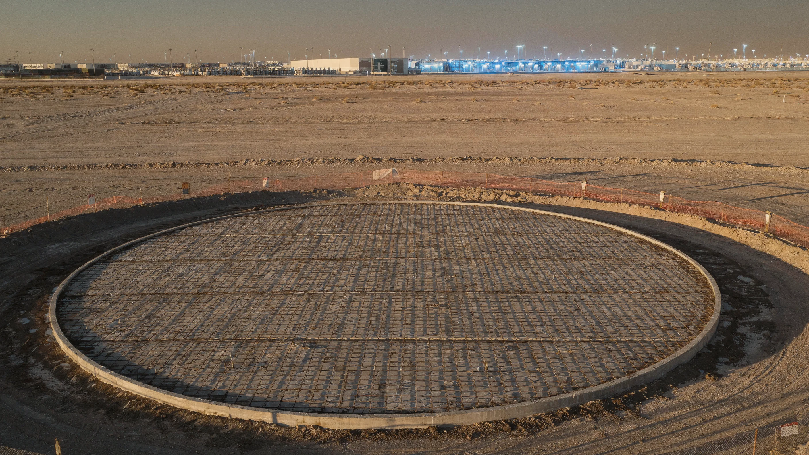
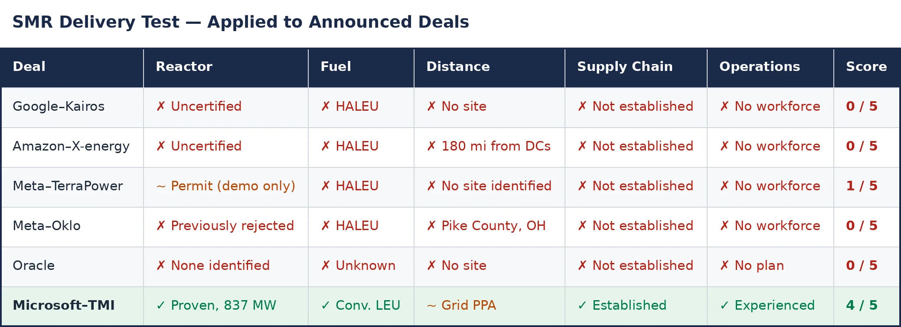

In September 2024, Larry Ellison described Oracle’s future to investors: a data center powered by three small modular reactors, over a gigawatt of dedicated nuclear capacity feeding nothing but Oracle’s servers.[1] No reactor vendor was named. No site was identified. No filing appeared with the Nuclear Regulatory Commission. The stock moved anyway.
Between late 2024 and early 2026, every major hyperscaler announced its own nuclear bet. Google signed a deal with Kairos Power for 500 megawatts of reactors that have never been certified.[2] Amazon backed X-energy for twelve modules totaling 960 megawatts that require a fuel only Russia can commercially produce.[3] Meta signed deals across four partners for up to 7.7 gigawatts — but most of the near-term capacity comes from Constellation and Vistra reactors that already exist, while the new-build commitments from TerraPower and Oklo depend on reactors that do not.[4] Total announced SMR capacity for data centers: roughly six gigawatts. Total delivered: zero.
This would be unremarkable if the promise were merely optimistic. Technology bets are often early. But the SMR-for-data-centers thesis rests on a specific claim that is structurally broken: that a compact reactor can be co-located with a hyperscale facility, generating power independently of the grid, on a timeline competitive with the data center buildout it is supposed to serve. That claim fails on six dimensions. And the most instructive evidence comes not from the United States, which has the weakest nuclear construction record among major nuclear nations, but from France, South Korea, and China — the countries that should be able to do this if anyone can.
Every announced SMR-for-data-centers deal can be evaluated with five questions. The reactor’s certification status. The fuel it requires. Its distance from the data center it claims to power. Who controls the supply chain from mine to megawatt? And who will operate it when it needs to stop? These five questions separate credible commitments from announcement theater — and they reveal that the credible nuclear-for-data-centers play is the opposite of the SMR pitch.
The power crisis is real
The demand is not invented. Global data center electricity consumption is expected to more than double by 2030, driven by AI training and inference workloads that consume orders of magnitude more power than conventional computing.[5] In the United States, PJM Interconnection — the grid operator serving the country’s densest data center corridor from Northern Virginia through New Jersey — failed to clear enough generation in its December 2025 capacity auction. The shortfall was 6,623 megawatts, the first time the entire region failed to meet its reliability target.[6] Data center load accounted for roughly forty-five percent of the capacity costs from that auction and two previous ones, a cumulative burden of $21.3 billion passed to all ratepayers.[7]
Hyperscalers need baseload power: electricity available twenty-four hours a day, every day of the year, regardless of weather or season. Solar and wind, for all their cost advantages, cannot deliver this alone. Natural gas can, but contradicts the carbon-neutral commitments that every major cloud provider has made. Nuclear — with its ninety-two percent capacity factor and zero direct carbon emissions — is the obvious theoretical answer.[8]
The problem is not the goal. The problem is the specific way the industry has chosen to pursue it.
Who can actually build nuclear
Who has ever built nuclear power successfully — and do those capabilities transfer to SMRs?
Franceoperates 57 reactors that generate roughly two-thirds of its electricity, more than any other nation on Earth.[9] It maintains a complete nuclear fuel cycle from enrichment to reprocessing at Orano’s La Hague facility, and its nuclear sector employs approximately 247,000 people across 2,000 companies.[10] France is the deepest Western repository of nuclear expertise. And France cannot build a new reactor on schedule. Flamanville 3, the European Pressurized Reactor that was supposed to demonstrate French nuclear prowess, ran twelve years late and roughly four times over its original construction budget of €3.3 billion.[11] The SMR picture is worse: EDF’s Nuward subsidiary restructured its design in July 2024, withdrew from the United Kingdom’s SMR competition, and relaunched in January 2025 with a simplified 400-megawatt concept. It now aims to finalize the conceptual design by mid-2026, with a first-of-a-kind reactor in France sometime in the 2030s.[12] The country with the deepest nuclear expertise in the Western world has not finalized the design of its SMR, let alone begun construction.
On March 10, 2026, European Commission President Ursula von der Leyen stood at the Nuclear Energy Summit in Boulogne-Billancourt and called Europe’s turn away from nuclear a “strategic mistake,” announcing a €200 million guarantee to support private investment in innovative nuclear technologies.[13] Emmanuel Macron called on banks and venture capital funds to invest in civilian nuclear. But €200 million is roughly five percent of the estimated cost of a single 300-megawatt SMR at Darlington — a policy signal, not a construction program.[14]
South Koreabuilt the Barakah nuclear power station in the United Arab Emirates — four APR-1400 reactors totaling 5,600 megawatts — completing the project at a final cost reported between $25 and $32 billion, or roughly $4,500 to $5,700 per kilowatt.[15] The project ran about four years behind its original schedule and significantly over its initial $20 billion contract price.[16] By any Western comparison, this is still a success story: Barakah cost roughly one-third per kilowatt of what Vogtle cost in Georgia, and each successive unit was delivered faster than the last — a genuine learning curve.[17] But the APR-1400 is a 1,400-megawatt pressurized water reactor with decades of design heritage. South Korea is developing an SMR concept, i-SMR. None is under construction. The discipline that built Barakah — standardized large reactor designs with deep production experience — is precisely the opposite of first-of-a-kind modular construction.
Chinais the only country operating small modular reactors. The HTR-PM at Shidao Bay reached commercial operation in December 2023, producing 210 megawatts.[18] The Linglong One is expected to reach commercial operation in the first half of 2026.[19] China has thirty-two reactors under construction and a fully vertically integrated supply chain from uranium enrichment to fuel fabrication to heavy forging.[20] But China achieved this through state capital, state direction, and a state-controlled supply chain that no Western hyperscaler can access. The technology works. The governance model does not export.
The paradox: the countries that can build nuclear cannot build SMRs for data centers. The country that can build SMRs for data centers builds them under a system no Western hyperscaler can replicate. The United States, which has the hyperscaler demand, hasn’t completed a reactor on time in decades — Vogtle Units 3 and 4 were seven years late and came in at two-and-a-half times the original budget.[21]
Six dimensions of failure
Geography
Data center demand is concentrated in places where reactors cannot go. Northern Virginia hosts the world’s densest data center corridor — and the population density that makes reactor siting politically impossible.[22] Dublin is among Europe’s largest data center markets and sits in a country that has banned nuclear power by statute.[23] Oregon, where Amazon, Google, Meta, and Apple operate major campuses, has a nuclear moratorium.[24] Frankfurt is the largest data center market in continental Europe and is located in a country that shut down its last three reactors in April 2023.[25] And where siting is theoretically possible, reactors and data centers both require cooling water — co-locating them doubles the demand at a site where drought or permitting may already be a constraint.[26]
Every announced SMR data center project is located at an existing nuclear site, eighty to one hundred eighty miles from the data centers it claims to serve.[27] Amazon’s X-energy deal sites reactors near Columbia Generating Station in Richland, Washington — a three-hour drive from Oregon’s data center corridor.[28] The reactor goes where nuclear infrastructure already exists. The data center goes where fiber, customers, and interconnection are. The co-location promise dissolves into a grid-connected Power Purchase Agreement (PPA) at a distance — and most hyperscalers have quietly structured their deals exactly this way, with the co-location narrative confined to earnings calls rather than contracts. That sharpens the critique: if these are grid PPAs for reactors that do not yet exist, they compete directly with TMI and Susquehanna — and lose, because those reactors already generate power.
Timeline
A hyperscaler builds a data center in eighteen to thirty-six months. No Western SMR has yet generated any commercial electricity. The furthest-along project, Ontario Power Generation’s BWRX-300 at Darlington, targets grid connection in 2030 after receiving its construction license in April 2025, and it has already slipped roughly two years from its original schedule.[29] TerraPower received a construction permit for its Natrium reactor on March 4, 2026 — the first for a commercial non-light-water reactor in over forty years — but still needs a separate operating license, expects to begin pouring nuclear concrete in late 2026 or 2027, and targets commercial operation no earlier than 2030.[30][31]
The international construction record reinforces the pattern. Flamanville: twelve years late. Hinkley Point C: roughly double the original budget, targeting 2030.[32] Olkiluoto 3: eighteen years to completion at nearly four times the original cost.[33] SMR vendors argue that factory modular construction — assembling reactor components in controlled facilities rather than building on-site — will break this pattern, and the argument has architectural merit: the BWRX-300, for instance, is designed specifically for factory fabrication of the reactor pressure vessel. But the escalation pattern is not inherited from those megaprojects — it emerges from the SMR projects’ own histories: NuScale, Darlington, and TerraPower have each escalated before a single module was manufactured. Regulatory reform under the Trump administration’s nuclear executive orders may compress future NRC timelines, but it does not address the other five dimensions— cost, fuel, supply chain, workforce, or operational complexity.[84]
Cost
Every first-of-a-kind SMR project has escalated. NuScale’s UAMPS project — the only NRC-certified SMR design — was cancelled in November 2023 after costs rose from $5.3 billion to $9.3 billion for 462 megawatts, or roughly $20,000 per kilowatt.[34] OPG’s Darlington BWRX-300 received its final investment decision in May 2025 at approximately $15,000 per kilowatt for the first unit — about six times GE Hitachi’s original target of $2,333 per kilowatt, and that is before a single watt of electricity has been generated.[35] TerraPower’s Natrium is officially estimated at $4 billion for 345 megawatts, or roughly $11,600 per kilowatt, though nuclear industry critics project the all-in cost could reach $29,000 per kilowatt based on historical first-of-a-kind escalation patterns.[36] These figures include costs unique to first units — test facilities, fuel qualification programs, and first-time regulatory proceedings — that subsequent units would not bear.[37]
For comparison: new utility-scale solar costs $38 per megawatt-hour and onshore wind $37 — roughly one-quarter the floor price of new nuclear at $141.[38] Gas combined-cycle plants run $48 to $109, undercutting nuclear across its entire range.[39] Even after adding transmission and firming costs that narrow the gap for intermittent sources, new nuclear remains the most expensive new-build option.[40] Dedicated nuclear power was supposed to serve as a hedge against grid price volatility. At current first-of-a-kind economics, nuclear power is more expensive than the grid it claims to displace. If later units achieve the $4,000 to $6,000 per kilowatt that vendors project for nth-of-a-kind production, the economics change — but that projection requires completing the first units on schedule and on budget — a record that does not yet exist.
Fuel sovereignty
Most of the advanced SMR designs that hyperscalers have backed — X-energy’s Xe-100, TerraPower’s Natrium, Kairos Power’s fluoride-salt reactor, and Oklo’s Aurora — require high-assay, low-enriched uranium, a fuel enriched to between 5 and 20 percent, compared with the 3 to 5 percent used in conventional reactors.[41] Russia’s TENEX, a Rosatom subsidiary, is the only commercial-scale producer.[42] Western production is embryonic: Centrus Energy’s demonstration cascade in Piketon, Ohio, produced approximately 900 kilograms of HALEU in 2025, orders of magnitude below the tonnage required to fuel a fleet of advanced reactors.[43] Even Orano, which operates the most advanced enrichment infrastructure in Western Europe, does not expect to produce HALEU at a commercial scale before the late 2020s.[44] The DOE’s $2.7 billion enrichment investment may close the supply gap by the early 2030s — roughly when the first HALEU-fueled reactors would need fuel — but the fabrication chain that converts enriched uranium into reactor-ready fuel assemblies does not yet exist at scale for any advanced fuel type.
The designs that avoid this dependency — the BWRX-300, the Rolls-Royce SMR, Westinghouse’s AP300 — use conventional low-enriched uranium with diversified supply. But those are not the reactors the hyperscalers chose for their headline deals. The most ambitious announcements require a fuel that only an adversary produces at scale.
Supply chain: mine to megawatt
The nuclear fuel chain has six links, and every one has a chokepoint owner. Kazakhstan mines roughly forty percent of global uranium, with a significant portion converted or enriched at Russian facilities before reaching Western customers.[45] Conversion capacity is concentrated across four countries. Enrichment: Rosatom controls forty to forty-six percent of global capacity; together with China, that exceeds sixty percent — a concentration tighter than OPEC’s share of oil production.[46] Fuel fabrication for advanced reactor designs is vendor-locked and doesn’t exist at a commercial scale outside China for the fuel types the hyperscaler-backed SMRs require.[47] Heavy forgings for reactor pressure vessels are produced at fewer than a dozen facilities worldwide, with no American company currently manufacturing large commercial reactor components at scale.[48][49]
Operational reality
The workforce does not exist either. The United States employs roughly 68,000 nuclear workers, and sixty-three percent of employers in nuclear manufacturing report that hiring is “very difficult.”[50] Approximately forty percent of the current workforce is eligible to retire within a decade.[51] The International Atomic Energy Agency projects that over four million nuclear professionals will be needed globally by 2050 to meet planned expansion targets.[52] Each new SMR design requires NRC-licensed operators trained on technology-specific simulators — simulators that, for the most part, do not yet exist.
Conventional reactors refuel every 18 to 24 months, requiring roughly 30 to 38 days of planned downtime.[53] During these outages, the data center needs grid backup — the same grid the reactor promised to eliminate. The grid remains essential. Advanced SMR designs claim refueling intervals of 3 to 7 years, but no design has demonstrated this commercially.[54] Unplanned outages account for two to three percent of reactor time, against data center availability targets of 99.995 percent — a gap of roughly two orders of magnitude that requires exactly the redundancy the co-location thesis was supposed to remove.[55]
The reactor adds complexity rather than resolving it. Standard hyperscale data centers use N+1 or 2N redundancy — every critical power component has at least one backup, with grid feeds through dual utility substations and diesel generators as tertiary protection. A co-located SMR replaces one source in this chain but does not eliminate any of the others. The data center still needs grid connection for refueling backup, still needs uninterruptible power supply systems for power quality during switchover, and still needs backup generators for dual-failure scenarios — indeed, Tier III and Tier IV data center certifications require on-site engine-generator backup regardless of primary power source.[56] The reactor is additive complexity, not a replacement.[57]
The grid stress problem is symmetrical. In July 2024, dozens of data centers in Virginia simultaneously dropped from the PJM grid during a transmission failure, losing over a gigawatt in seconds.[58] The reverse scenario — hundreds of megawatts of data center load suddenly demanding grid power because a co-located reactor went offline — also places comparable stress on the grid. Modern grid codes are increasingly requiring data centers to behave as virtual power plants with controlled ramp rates. An SMR-powered data center must comply with both NRC reactor regulations and evolving grid participation requirements — two regulatory regimes designed independently, with no precedent for their intersection on a single campus.[59] And reactor builds compete for the same constrained trades — electricians, welders, heavy-equipment operators — as the data center buildouts they claim to power.[60]
The SMR Delivery Test
Five questions. Apply them to any announced SMR-data center deal.
What is the reactor?If NRC-certified with construction experience: five to eight years to deployment. If uncertified: eight to fifteen years. Google’s Kairos and Amazon’s X-energy are uncertified. TerraPower received its construction permit in March 2026. OPG’s BWRX-300 is under construction but hasn’t generated a watt of power.
What is the fuel?If a conventional low-enriched uranium diversified supply exists. If HALEU: supply is controlled by Russia, with Western production years away. Most hyperscaler-backed designs require HALEU.
What is the distance?If truly co-located with a data center, zero announced projects achieve this. If grid-connected at 50 to 200 miles, it is a PPA, not co-location. If financial only, it is a carbon accounting exercise.
Who controls the supply chain?Map the six links from mine to megawatt. Count how many route through a single actor or adversary. No hyperscaler controls any link.
Who runs it, and what happens when it stops?Does the workforce exist? Is there a refueling plan? What is the backup power source during outages? In every case, the answer loops back to the grid.
Applied to the announced deals:

The contrast in the last row is the point. The deal that scores highest on the delivery test is the deal that involves no SMR. It is a fifty-year-old reactor, grid-connected, staffed by an existing workforce, burning conventional fuel — the inverse of every SMR announcement above it in the table.[61]
The table is not exhaustive — Standard Power, Dominion Energy, and Equinix have signed their own SMR deals, none of which would score above one — but the pattern holds across the full landscape.[62] On the eve of publication, X-energy filed for a Nasdaq IPO, disclosing $390 million in losses on $94 million in revenue — a company that has never generated a commercial watt, going public to fund reactors that remain years from construction.[3]
What actually works
The deals that deliver real power look nothing like the SMR pitch. Microsoft’s twenty-year agreement with Constellation to restart Three Mile Island’s Unit 1 will add 837 megawatts of proven capacity, at an estimated cost of $1.6 billion, with a $1 billion DOE loan already closed — targeting 2027, at a contract price reportedly above $110 per megawatt-hour.[63] That is a premium over wholesale rates, but a fraction of what any new-build reactor would cost.
Meta signed a twenty-year PPA with Constellation for Clinton Clean Energy Center’s 1,121 megawatts in Illinois — a plant that was headed for closure until the deal replaced its expiring state subsidies with private offtake.[64] Meta also signed with Vistra for nuclear power from operating plants in Ohio and Pennsylvania, plus uprates at those plants and at Beaver Valley, adding a further 433 megawatts in the early 2030s.[65]
Amazon’s PPA with Talen Energy for Susquehanna’s 1,920 megawatts is delivering power now.[66] Google signed with NextEra to restart Duane Arnold, a 615-megawatt reactor in Iowa, targeting early 2029.[67]
Combined, these conventional nuclear deals represent over seven gigawatts — dwarfing the announced SMR total — with delivery timelines of 2026 to 2029. But the runway is finite: the United States has roughly 95 gigawatts of operating nuclear capacity, and the conventional PPA pipeline will exhaust itself well before data center demand does.
The credible nuclear-for-data-centers play is the one that requires no technological breakthrough, no new fuel supply, no first-of-a-kind construction, and no workforce that doesn’t already exist. It is also the one that no one writes press releases about, because “we signed a power purchase agreement with a fifty-year-old reactor” does not move a stock price.
Beyond nuclear, the technologies that actually compete on the SMR value proposition — firm, carbon-free, baseload — are arriving faster. Fervo Energy’s Cape Station in Utah will deliver its first hundred megawatts of enhanced geothermal to the grid in 2026, with an additional four hundred megawatts by 2028.[68] Cape Station is itself a first-of-a-kind project at this scale — the difference is that a geothermal well that underperforms can be redrilled in months, while a reactor that underperforms enters a years-long correction cycle.
Chevron, GE Vernova, and Engine No. 1 are building natural gas “power foundries” delivering four gigawatts of co-located behind-the-meter capacity by the end of 2027 — technology that exists, at a scale that matters, on a timeline that matches the demand.[69] Gas foundries deliver on timeline and cost but face their own headwinds: air-quality permits and state decarbonization mandates may constrain expansion in markets where data center demand is highest. The tell is in Meta’s own portfolio: the same company that announced 6.6 gigawatts of nuclear deals in January 2026 is simultaneously building a $3.2 billion, two-gigawatt gas plant in Louisiana and secured approval for a 700-megawatt gas plant in Ohio — more capital committed to gas than to any single nuclear partner.[70] Battery storage costs are plummeting, with Lazard’s 2025 analysis showing sharp year-over-year declines that bring hybrid solar-plus-storage into the competitive range for firmed power.[71]
What it costs
None of this makes cloud cheaper. Even before the AI-driven demand surge, Microsoft disclosed $800 million in unexpected energy costs in fiscal 2023, compressing cloud margins.[72] Colocation rates in Northern Virginia have surged, with premiums breaching $215 per kilowatt per month.[73] The cost chain is direct: energy represents thirty to forty percent of data center operating expenses, and those costs pass through to enterprise customers via instance pricing, storage fees, and capacity charges.[74]
PJM capacity costs are recovered from all ratepayers — including businesses that are also cloud customers — creating double exposure: higher cloud bills from hyperscaler energy pass-through and higher electricity bills from capacity charges driven by the same data center load.[75] Virginia has already approved data-center-specific rate classes; other states are following.[76]
The capital allocation question sharpens the problem. The five largest hyperscalers plan a combined capital expenditure of $600 to $690 billion in 2026, consuming nearly 100% of their operating cash flows, compared with a ten-year average of 40%.[77] Amazon faces a projected negative free cash flow of $17 to $28 billion. Alphabet’s free cash flow is expected to fall roughly ninety percent. The hyperscalers have collectively issued over $120 billion in bonds in 2025 alone — Alphabet quadrupled its long-term debt in a single year to $46.5 billion, including a hundred-year sterling tranche; Amazon’s total debt now exceeds $100 billion.[78] As cheap options against a $600 billion annual capex budget, the SMR commitments make financial sense; as near-term power procurement strategies, they contribute nothing.
Adding $4 to $15 billion nuclear reactors on top of that capex — for power that arrives five to ten years after the data center it was built to feed — is not a rounding error. It is a second capital-intensive construction program running in parallel with the first, competing for the same engineering talent, balance sheet capacity, and investor patience.
At current first-of-a-kind economics, SMR power would be the most expensive electricity a data center has ever bought. And for any deal that promises co-location, there is a temporal mismatch: a nuclear reactor has a 60- to 80-year operating life, while the AI workloads it serves operate on 3- to 5-year technology cycles.[79] A reactor commissioned in 2035 to power GPU clusters will still be generating electricity in 2095. A grid-connected reactor avoids this trap — the electrons go to the grid, and the grid doesn’t care what’s plugged in. But if the answer is grid PPAs, the hyperscalers already have them.
Announce, delay, bridge
The pattern has a name. In the 1990s, the telecommunications industry promised fiber to every home. Billions were committed. The physics worked, the technology existed, but the deployment economics didn’t close — the last mile was too expensive to build one home at a time. What bridged the gap was wireless: 3G, then 4G, now 5G, delivering bandwidth through completely different infrastructure at a fraction of the cost. Fiber eventually arrived decades later, in dense corridors, deployed by companies that looked nothing like the ones that made the original promises.[80]
The SMR data center thesis follows the same arc. Nuclear physics is real. The technology, in principle, works — China has proven that. But the economics of deployment do not close: all six dimensions compound. What bridges the gap is the less revolutionary infrastructure — gas turbines, solar farms, battery storage, geothermal wells, and grid-connected PPAs with reactors that already exist — deployed by companies making purchase orders rather than press releases.
Four scenarios define what comes next, and they operate on fundamentally different clocks.
OPG’s Darlington BWRX-300 is expected to reach commercial operation around 2030 and will demonstrate whether a Western SMR can be built on budget and on schedule. The four-unit project is budgeted at approximately $15 billion for 1,200 megawatts; if the learning curve materializes, the later units should cost substantially less than the $15,000-per-kilowatt first unit.[81] But even in the optimistic case, the learning curve takes a decade — the fourth unit would likely generate power in the mid-2030s.
Meanwhile, Fervo will have been operating for nearly a decade. It could reach five hundred megawatts by 2028 and prove that enhanced geothermal can compete directly with nuclear on the baseload value proposition — firm, twenty-four-hour carbon-free power — at a fraction of the timeline and cost. If it does, the SMR thesis loses its unique selling point.[82]
China continues to deploy SMRs under state direction, accumulating operational experience and cost data that the West can observe but cannot replicate — the same pattern that played out in high-speed rail, solar panel manufacturing, and battery production.[83] The question is not whether China’s model produces cheaper nuclear. It does. The question is whether any Western government or company can import the model without importing the governance structure that makes it work. So far, the answer is no.
There is, however, one Western institution moving at something approaching China’s speed, and it is not a hyperscaler. The U.S. Army’s Janus Program has named nine bases for microreactor deployment, with an executive order mandating an operational reactor by September 2028.[85] The DOE’s Reactor Pilot Program has selected ten companies across eleven projects racing to reach criticality by July 4, 2026 — and on February 15, Valar Atomics’ Ward250 was airlifted on a C-17 from California to Utah in the first airlift of a nuclear microreactor in American history.[86] The catch: both programs bypass the NRC entirely, using DOE and Army regulatory authority under the Atomic Energy Act. The only Western institution hitting nuclear timelines competitive with China’s is the one that removed the commercial regulatory process from the equation. The first real customer for microreactors will not be a hyperscaler. It will be the Pentagon, justifying cost on mission assurance rather than price per megawatt-hour, and deploying through a regulatory pathway no commercial operator can access.[87]
The SMR co-location promise fails against all six dimensions. Even the most nuclear-capable nations on earth have not accomplished what Oracle’s earnings call describes as imminent. And the hyperscalers that made the announcements are quietly doing something else entirely: signing purchase agreements with fifty-year-old reactors, contracting for gas turbines, and buying geothermal.
The case for building new nuclear capacity in the 2030s is strong — the conventional PPA runway is finite, and nothing else proven matches nuclear’s combination of baseload reliability, energy density, and zero carbon emissions.[88] But the case for believing these specific announcements will deliver it is not. The thesis breaks if Darlington delivers on budget by 2030, or if any HALEU-fueled commercial reactor achieves grid connection before 2032. Until then, the scoreboard reads: announced six gigawatts, delivered zero.
The promise was a reactor for every data center. The reality is a press release for every earnings call. The stock still moves anyway.
Notes
[1] Ellison, Oracle FY25 Q1 earnings call, September 9, 2024. Ellison’s exact words: “We’re in the middle of designing a data center that’s north of a gigawatt. The location and the power place we’ve located, they’ve already got building permits for three nuclear reactors.” No NRC filing, vendor agreement, or site selection has appeared in any subsequent SEC disclosure.Motley Fool
[2] Google-Kairos Power agreement, October 2024. Kairos’s fluoride-salt-cooled high-temperature reactor is not NRC-certified. A non-power demonstration unit (Hermes) is under construction at Oak Ridge National Laboratory.Google Blog
[3] Amazon-X-energy/Energy Northwest agreement, October 2024. The Xe-100 is a high-temperature gas-cooled reactor requiring HALEU. Twelve 80 MW modules totaling 960 MW, sited near Columbia Generating Station in Richland, WA. On March 20, 2026, X-energy filed an S-1 for a Nasdaq IPO (ticker: XE), disclosing $390 million net loss on $94 million revenue (excluding grants) for 2025 — losses tripling year-over-year while the Xe-100 remains uncertified and no commercial reactor is under construction. The company claims an 11+ GW development pipeline across US and UK partnerships.Amazon; S-1:SEC
[4] Meta-TerraPower: up to eight Natrium reactors totaling approximately 2.8 GW, from 2032. Meta-Oklo: 1.2 GW across multiple Aurora reactors, Pike County, OH, 2030-2034. As of March 17, 2026, Oklo announced a DOE safety design agreement for its Aurora demonstration reactor at Idaho National Laboratory — a milestone for the demo unit, not the commercial Pike County project. Meta-Vistra: uprates at operating plants in Ohio and Pennsylvania. Meta also signed a 20-year PPA with Constellation for Clinton Clean Energy Center (1,121 MW BWR, Illinois), June 2025.Meta;Constellation Energy
[5] IEA,Electricity 2025report, January 2025. Global data center electricity consumption is projected to exceed 945 TWh by 2030, from approximately 415 TWh in 2024.IEA
[6] PJM Interconnection, Base Residual Auction results, December 2025. The 6,623 MW shortfall marked the first time the entire RTO failed to clear its reliability target.PJM
[7] PJM Monitoring Analytics estimates. Data center share of capacity costs: approximately $6.5 billion from the December 2025 auction; cumulative $21.3 billion across three consecutive auctions (July 2024, December 2025, and February 2026), representing approximately 45% of the $47.2 billion total.Utility Dive
[8] EIA,Nuclear Explained, 2024. US nuclear fleet average capacity factor: 92.2% in 2024.EIA
[9] World Nuclear Association, “Nuclear Power in France,” updated 2025. France has 57 operable reactors following the grid connection of Flamanville 3 in December 2024. Nuclear share of French electricity: IAEA reports 67.3% for 2024; historical share ranged 65-75% before the 2022 corrosion crisis temporarily reduced availability.WNA
[10] GIFEN 2025 Match Report: approximately 247,000 people across ~2,000 companies in France’s nuclear sector. Older GIFEN web pages cite “more than 3,000” using a broader industry definition; the 2025 methodology identifies ~1,830 companies directly. The earlier workforce figure of 220,000 (cited by World Nuclear News/Chamberlain-Rullion, May 2025) used a narrower definition.SFEN
[11] Flamanville 3 EPR: construction began in December 2007; original target approximately 2012; grid connection December 21, 2024 — twelve years late. Original budget €3.3 billion; final cost approximately €13.2 billion per EDF’s December 2022 estimate. The French Court of Auditors estimated the total cost, including financing, at €23.7 billion. World Nuclear Association; NucNet.WNA
[12] EDF/Nuward: design optimization announced July 2024; EDF withdrew Nuward from Great British Nuclear’s SMR competition July 2024; relaunched January 2025 as a simplified 400 MW PWR concept. Conceptual design finalization target: mid-2026. FOAK target: “the 2030s.” World Nuclear News, January 7, 2025.WNN
[13] Nuclear Energy Summit, Boulogne-Billancourt, March 10, 2026. Von der Leyen: “I believe that it was a strategic mistake for Europe to turn its back on a reliable, affordable source of low-emissions power.” €200 million guarantee for innovative nuclear technologies, funded from the EU Emissions Trading System. Macron called on banks and venture capital funds to invest in civilian nuclear, stating that “each public and private actor must take its share.” NucNet, Bloomberg, ANS Nuclear Newswire, March 10-12, 2026. For context: OPG’s Darlington first BWRX-300 reactor is budgeted at CAD $6.1 billion (~US$4.5 billion, ~€4.1 billion). €200 million is roughly 5% of that figure. The total first-unit budget including shared site infrastructure (roads, tunnels, utilities serving all four planned units) is CAD $7.7 billion per World Nuclear News, June 2025.WNN
[14] The EU SMR Industrial Alliance, launched in February 2024, has over 350 members, including utilities, reactor developers, and supply chain companies, coordinating cross-border regulatory frameworks. CEZ (Czech Republic) signed a strategic partnership with Rolls-Royce SMR in October 2024; Poland’s Orlen-Synthos selected Włocławek as the site for a BWRX-300 in August 2025. These utility-driven projects represent a genuine European SMR pipeline — but none is under construction, and the gap between industrial alliance membership and commercial deployment remains measured in years. The €200 million guarantee is designed to catalyze private investment into this pipeline; whether it scales to the tens of billions required for actual construction remains to be seen.European Commission
[15] Barakah cost: original KEPCO contract $20.4 billion (ENEC/KEPCO, 2009). Final cost reported at $32 billion per Power Technology (April 2020). Bloomberg has reported $25 billion. Per-kilowatt range: approximately $4,500-$5,700/kW for 5,600 MW nameplate capacity.Power Technology
[16] Barakah schedule: Unit 1 commercial operation originally targeted May 2017; achieved April 2021, approximately four years late. Unit 4 commercial operation September 2024 versus original 2020 target.WNA
[17] Vogtle Units 3 and 4: approximately $35 billion for 2,234 MW, or roughly $15,700/kW. Barakah at $5,700/kW (high estimate) is approximately one-third of Vogtle’s cost per kilowatt. ENEC reported a 40% improvement in the operational readiness schedule from Unit 1 to Unit 4.EIA
[18] China HTR-PM: 210 MWe pebble-bed reactor at Shidao Bay, Shandong Province. Commercial operation declared December 2023. IAEA PRIS.IAEA
[19] Linglong One (ACP100): 125 MWe, Changjiang Nuclear Power Plant, Hainan Island. CNNC targets commercial operation in H1 2026. World Nuclear Association.WNN
[20] China: 32 reactors under construction as of early 2026 per World Nuclear Association. CNNC operates an enrichment capacity of approximately 9 million SWU per year.WNA
[21] Vogtle Units 3 and 4: original cost estimate approximately $14 billion (2012); final cost approximately $35 billion. Construction began in 2013; Unit 3 commercial operation: July 2023; Unit 4: April 2024. Georgia Public Service Commission filings.EIA
[22] Northern Virginia hosts approximately 35% of US data center capacity by some estimates. Loudoun County alone contains more than 300 data centers. Population density and existing residential development make reactor siting politically nonviable.CBRE
[23] Ireland: the Electricity Regulation Act 1999, Section 18(6), effectively prohibits nuclear power generation. Dublin is among the top five data center markets in Europe (approximately fifth in IT load, after London, Frankfurt, Amsterdam, and Paris, per JLL and CBRE FLAP-D rankings).Irish Statute Book
[24] Oregon: ORS 469.595 imposes a moratorium on nuclear plant construction pending federal resolution of waste disposal. Amazon, Google, Meta, and Apple operate significant data center campuses in The Dalles, Prineville, and Hillsboro.Oregon Legislature
[25] Germany shut down its last three operating reactors — Emsland, Isar 2, and Neckarwestheim 2 — on April 15, 2023. Frankfurt is the largest data center market in continental Europe.CNBC
[26] Water co-location: nuclear reactors require cooling water for the steam turbine cycle, even advanced designs that use non-water primary coolants (sodium, helium, molten salt). Data centers require cooling water for heat rejection systems (cooling towers, evaporative systems). Co-locating both roughly doubles the site's water demand. In the American West and Southwest — where Google, Meta, and Microsoft are expanding data center campuses — water rights are contested, drought is chronic, and permitting for water-intensive industrial use is becoming politically contentious. Some jurisdictions (e.g., The Dalles, Oregon; Mesa, Arizona) have already restricted or conditioned data center water usage.
[27] The author’s analysis of announced SMR-data center project sites versus data center demand locations, based on public filings and company announcements.
[28] Energy Northwest’s Columbia Generating Station is in Richland, WA, approximately 180 miles from The Dalles, OR, where Google, Amazon, and Meta operate data centers.Energy Northwest
[29] OPG Darlington BWRX-300: CNSC construction license issued April 2025. The original target for commercial operation was approximately 2028; the grid connection is now targeted for the end of 2030, roughly two years behind the original schedule. Globe and Mail, May 8, 2025; CBC, May 8, 2025; POWER Magazine, April 2025.CNSC
[30] TerraPower Natrium: NRC construction permit issued March 4, 2026 — the first for a commercial non-light-water reactor in over 40 years. 345 MW sodium-cooled fast reactor. Still requires a separate operating license. TerraPower stated nuclear construction would begin “in the coming weeks” as of March 9, 2026; first nuclear concrete expected late 2026 or 2027. Commercial operation targeted 2030 (DOE) to 2031 (TerraPower COO). DOE press release; NucNet, March 3, 2026; POWER Magazine, March 2026.WNN
[31] Natrium is rated at 345 MW — technically above the 300 MW threshold commonly used to define small modular reactors. The IAEA and some industry sources classify it as an advanced reactor rather than an SMR. This piece groups it with the SMR-for-data-centers category because hyperscalers, investors, and the press have consistently described it as part of the SMR wave, and the structural constraints the piece identifies (HALEU dependency, supply chain concentration, workforce, timeline) apply regardless of the classification. Latitude Media explicitly noted the classification discrepancy in March 2026.Latitude Media
[32] Hinkley Point C: original budget approximately £18 billion (2015 prices). Current estimate approximately £35 billion in 2015 prices (equivalent to roughly £48-49 billion in current prices) per EDF’s February 2026 annual results. Unit 1 officially targeting 2030, though further slippage remains likely given EDF’s track record. EDF and UK government disclosures.EDF
[33] Olkiluoto 3: construction began in August 2005; regular electricity production began on April 16, 2023; TVO designated formal commercial operation on May 1, 2023. Original budget approximately €3 billion; final cost approximately €11 billion. TVO/Areva disclosures; World Nuclear Association.WNA
[34] NuScale UAMPS: 462 MW (six 77 MW modules). Original cost estimate $5.3 billion; escalated to $9.3 billion ($20,139/kW). Cancelled November 8, 2023. IEEFA analysis; NuScale/UAMPS joint statement.E&E News
[35] OPG Darlington BWRX-300 FOAK: CAD $6.1 billion (~US$4.5 billion) for 300 MW = approximately US$15,000/kW. GE Hitachi original cost target: US$700 million per reactor, or approximately $2,333/kW. Escalation ratio: approximately 6.4×. Globe and Mail, May 2025; Carbon Commentary analysis.WNN
[36] TerraPower Natrium: official estimate $4 billion for 345 MW (DOE ARDP 50/50 cost share: $2 billion federal, $2 billion TerraPower). Official per-kW: approximately $11,600/kW. The $29,000/kW projection is from the Southern Alliance for Clean Energy (June 2025), citing Bill Gates interview comments on the expected all-in cost. Both figures cited for transparency; the actual cost will be determined by construction experience.DOE
[37] FOAK overhead vs. structural costs: first-of-a-kind nuclear projects include one-time costs that subsequent units would not bear. OPG Darlington’s CAD $1.6 billion in shared infrastructure (roads, cooling tunnels, administrative buildings) is allocated to the first unit but serves all four. TerraPower’s $4 billion includes the Sodium Test and Fill Facility and the Natrium Fuel Fabrication Facility — both one-time investments. NuScale’s cost escalation included first-time NRC design certification costs that a second project using the same certified design would avoid. For investment evaluation, the relevant question is not the FOAK cost but whether the FOAK-to-NOAK cost reduction ratio matches vendor projections, which requires completing the first unit on schedule, which no Western project has done.
[38] Lazard LCOE+ Version 18.0 (June 2025). Unsubsidized LCOE: utility-scale solar $38-$78/MWh; community and C&I solar $78-$217/MWh (a separate category with different economics); onshore wind $37-$86/MWh; nuclear $141-$220/MWh. The body text uses the utility-scale solar low end ($38) as the relevant comparison for hyperscaler procurement decisions.Lazard
[39] Lazard LCOE+ Version 18.0. Gas combined cycle: $48-$109/MWh unsubsidized. This undercuts nuclear ($141-$220) across its entire range.Lazard
[40] Lazard LCOE+ Version 18.0 includes a “firming cost” analysis that adds the cost of supplemental capacity needed to make intermittent renewables reliable in each ISO region. Firming adders vary by region and renewable penetration level. Even with firming costs included, the delivered cost of wind and solar-plus-storage remains below new nuclear LCOE in most US markets. However, the gap narrows, particularly in regions with high renewable penetration, where effective load-carrying capacity is declining. The honest comparison for a data center procurement team is delivered, firm cost — not generation-point LCOE.Lazard
[41] HALEU: high-assay low-enriched uranium, enriched to between 5% and 19.75% U-235. Conventional reactor fuel is typically enriched to 3-5%. Designs requiring HALEU: X-energy Xe-100, TerraPower Natrium, Kairos Power KP-FHR, and Oklo Aurora. Designs using conventional LEU: GE Hitachi BWRX-300, Rolls-Royce SMR, Westinghouse AP300. The hyperscaler-backed fleet skews heavily toward HALEU designs.NRC
[42] TENEX (Rosatom subsidiary) is the only entity producing HALEU at a commercial scale as of March 2026. World Nuclear Association; DOE HALEU program documentation.WNA
[43] Centrus Energy: HALEU demonstration cascade at Piketon, OH. DOE contract. Production is approximately 900 kg in 2025. The DOE issued a $900 million task order in January 2026 to accelerate domestic HALEU production across multiple contractors.DOE
[44] Orano: Operating enrichment capacity at Georges Besse II is sufficient for LEU. Higher-enrichment production at commercial scale is not expected before the late 2020s, per industry reporting and Orano corporate communications.Orano
[45] Kazakhstan: approximately 39-40% of global uranium production (WNA, 2024). A significant portion is converted or enriched at Russian facilities. Kazakhstan also has direct export routes via China and via the Caspian Sea. The transit dependency is partial, not absolute.WNA
[46] Rosatom: approximately 27 million SWU/year across four facilities, representing 40-46% of global enrichment capacity (approximately 61-67 million SWU/year total). Rosatom plus CNNC (China): over 60% of global capacity. WNA; Mordor Intelligence.WNA
[47] TRISO fuel (required by X-energy, Kairos) and metallic fuel (required by TerraPower) are not produced at a commercial scale in the West. China’s fuel fabrication capacity includes TRISO lines at INET/Tsinghua for the HTR-PM.
[48] Major nuclear forging facilities: Japan Steel Works (Muroran), Doosan (Changwon, South Korea), Shanghai Electric and Dongfang Electric (China), Framatome/Creusot Forge (France), ENSA (Spain), Atomenergomash (Russia). BWXT in the US manufactures naval reactor components and is expanding into commercial nuclear, but does not currently mass-produce large commercial reactor pressure vessel forgings.
[49] The author’s synthesis is based on nuclear construction activity tracked by WNA, IAEA PRIS, and country-specific regulatory filings.
[50] DOE United States Energy & Employment Report (USEER) 2025: 67,900 workers in nuclear energy (approximately 68,000). 63% of nuclear manufacturing employers reported hiring “very difficult.”DOE
[51] NEI estimate, confirmed by DOE and multiple industry sources: approximately 40% of the current US nuclear workforce is eligible to retire within the next decade. Retirement eligibility does not equal certainty of departure; IAEA uses a lower global figure of approximately one-third.NEI
[52] IAEA: projects that global nuclear capacity could increase 2.5× by 2050, requiring “over four million professionals.” Multiple IAEA publications, 2024-2025.IAEA
[53] EIA, NRC data: US nuclear fleet average refueling outage duration 30-38 days, depending on year (top performers achieve 25 days; fleet average has trended down from 44 days in 2000). Refueling frequency: every 18-24 months for most US commercial reactors.EIA
[54] Advanced SMR refueling targets per IAEA design documentation: 3-7 years between refueling for some designs; Westinghouse AP300 claims a 4-year cycle. These are design targets, not demonstrated commercial performance.
[55] NRC and WANO data show that US forced (unplanned) outage rates have averaged 2-3% over the past decade. A nuclear capacity factor of 92% implies approximately 29 days per year offline (planned and unplanned downtime combined). Uptime Institute Tier IV standard guarantees 99.995% availability, or approximately 26 minutes of annual downtime. The gap between 2-3% unplanned unavailability and 0.005% allowable unavailability is roughly 400-600×.Uptime Institute
[56] Uptime Institute Tier III and Tier IV certifications require redundant power paths, including on-site engine-generator backup, regardless of the primary power source. The Tier Standard is technology-neutral — diesel, natural gas, or DRUPS systems all qualify, though the overwhelming majority of implementations use diesel. Even a 100% reliable nuclear reactor (which no reactor is) would not eliminate the need for a generator to maintain tier certification. The SMR therefore adds a power source without removing any existing one.Uptime Institute
[57] The author’s analysis is based on Schneider Electric data center design guidance, IEEE/IEC redundancy standards, and ABB DataCenterKnowledge reporting on DC power architecture. Standard N+1 and 2N redundancy architectures require grid, UPS, and diesel backup regardless of primary power source. No NRC guidance exists for the co-location of a reactor data center on a shared campus.
[58] PJM/NERC reporting: dozens of data centers in Northern Virginia disconnected during a July 2024 transmission event, with reported losses exceeding 1 GW. Exact figures vary across reporting sources; the NERC event report details have not been fully published. The reverse scenario — sudden grid demand from reactor outage — presents comparable load-balancing challenges.
[59] Emerging grid codes requiring data center “virtual power plant” behavior — controlled ramp rates (10-20 MW per minute during reconnection), staged restoration logic, and voltage ride-through capability — are documented in sgrids.com grid code analysis and FERC Order 2023 interconnection requirements. The regulatory intersection of NRC reactor oversight and FERC/PJM grid participation rules on a single campus has no precedent.
[60] Nuclear construction and data center construction compete for the same constrained skilled trades — electricians, heavy-equipment operators, specialized welders — particularly in markets like Virginia and the Southeast, where both buildouts are concentrated. DOE USEER 2025 documents the skilled-trade shortage across energy infrastructure.
[61] The author’s assessment applies the five-question SMR Delivery Test to each announced deal. The test evaluates delivery readiness, not economics; cost analysis is developed separately in the “What it costs” section. A sixth question — “What does the power cost per megawatt-hour, and how does that compare to alternatives?” — is analytically essential but excluded from the delivery test because no SMR deal has progressed far enough to produce a binding price. Oracle’s announcement fails all five: no reactor identified (fails Q1), no fuel determined (fails Q2), no site identified (fails Q3), no supply chain mapped (fails Q4), no operational plan disclosed (fails Q5).
[62] Deal structures vary significantly across the table. Microsoft-Constellation TMI is a signed 20-year power purchase agreement. Amazon-Talen Susquehanna is a signed front-of-meter PPA. Google-Kairos is a milestone-contingent offtake agreement. Meta-TerraPower includes investments in reactor development, as well as offtake commitments for future units. Oracle has disclosed no contractual commitments, vendor agreements, or site selection in any SEC filing — the 1+ GW figure originates from an earnings call. The binding nature of the commitment is a material distinction for investment evaluation. The table focuses on the five major hyperscalers but is not exhaustive: Standard Power selected NuScale for ~1,848 MW across two data center sites in Ohio and Pennsylvania (October 2023) — the only deal using an NRC-certified design, but no construction timeline has been disclosed. Amazon also signed an MOU with Dominion Energy for ~300 MW at North Anna, Virginia (October 2024) — an exploratory agreement, not a PPA. Equinix signed SMR deals with Oklo, Radiant, Rolls-Royce/ULC-Energy, and Stellaria totaling over 1 GW (August 2025). None of these additional deals would score above 1/5 on the delivery test, which reinforces rather than undermines the pattern.NuScale;Dominion Energy;Equinix
[63] Constellation-Microsoft: 20-year PPA for TMI Unit 1 (renamed Crane Clean Energy Center), 837 MW. Restart cost: $1.6 billion. DOE $1 billion loan closed November 18, 2025, at 0.375% interest rate. Target: 2027 (accelerated from original 2028 timeline). Constellation Energy press release, September 20, 2024; DOE Loan Programs Office, November 2025; CNBC, November 18, 2025. PPA pricing: Jefferies analysts estimated approximately $110-115/MWh over the 20-year contract term. Neither Constellation nor Microsoft has disclosed the exact price. For context, wholesale PJM spot prices fluctuated between $30 and $ 80/MWh in 2024-2025; new-build nuclear LCOE is $141-220/MWh, per Lazard. The TMI PPA sits between spot and new-build — a premium for firm, carbon-free, long-duration price certainty.Constellation Energy
[64] Meta-Constellation: 20-year PPA for output of Clinton Clean Energy Center, a 1,121 MW BWR in Clinton, Illinois. Signed June 3, 2025. Begins June 2027. Replaces the Illinois Zero Emission Credit program expiring mid-2027. Includes 30 MW uprate. Preserves 1,100 jobs and $13.5 million annual tax revenue. Constellation is also evaluating the deployment of an advanced reactor (SMR) at the Clinton site. Constellation Energy press release; CNBC, June 3, 2025; World Nuclear News.Constellation Energy
[65] Meta-Vistra: agreements for nuclear power from Perry, Davis-Besse (Ohio), and Beaver Valley (Pennsylvania). Includes uprates to increase output. Combined fleet capacity is approximately 2,600 MW. Vistra announcement, January 9, 2026.Utility Dive
[66] Amazon-Talen Energy: PPA for power from Susquehanna nuclear plant, 1,920 MW (two units). Front-of-meter PPA structure after FERC rejected the original behind-the-meter design. Generating power. Multiple reporting sources.SEC
[67] Google-NextEra: agreement to restart Duane Arnold, a 615 MW BWR in Iowa, shut down in August 2020. Target: early 2029. Announced October 27, 2025. NextEra Energy press release; ANS Nuclear Newswire.NextEra Energy
[68] Fervo Energy Cape Station: Phase I delivers 100 MW baseload enhanced geothermal to the grid in 2026. Phase II adds 400 MW by 2028, bringing the total to 500 MW. BLM permit approved for up to 2 GW expansion. Located in Beaver County, Utah. $462 million Series E (December 2025), $206 million additional financing (June 2025). Fervo Energy press releases; Canary Media.Fervo Energy
[69] Chevron, GE Vernova, and Engine No. 1: partnership announced January 28, 2025. “Power foundries” using seven GE Vernova 7HA natural gas turbines, up to 4 GW behind-the-meter co-located with data centers in the US Southeast, Midwest, and West. Initial in-service targeted end of 2027. Chevron/Engine No. 1 joint press release.Engine No. 1
[70] Meta’s Hyperion project in Richland Parish, Louisiana: a $3.2 billion, 2 GW combined-cycle natural gas plant to power a planned data center campus. Meta also secured approval from the Ohio Power Siting Board for a 700 MW natural gas plant at its Prometheus AI campus in New Albany, Ohio — expanded from an initial 400 MW proposal. Both projects deliver power on a 2–3 year timeline, compared to the 2030s targets for Meta’s SMR partnerships. Brookings Institution, March 2026; Ohio Power Siting Board filings; tech-insider.org.Tech Insider
[71] Lazard LCOE+ Version 18.0: battery energy storage system costs showed “sharp year-over-year declines” driven by oversupply of cells and increased energy density.Lazard
[72] Microsoft FY23 Q1 earnings call, October 26, 2022. CFO Amy Hood disclosed “$800 million of greater-than-expected energy cost” for fiscal year 2023, driven primarily by the European energy crisis, compressing cloud margins by approximately 1 percentage point. This preceded the AI-driven demand acceleration; more recent earnings calls (FY26 Q1 and Q2) reference continued margin pressure from AI infrastructure investment but do not isolate energy costs specifically.Microsoft
[73] CBRE Data Center Trends reports, 2025. Ashburn, VA wholesale colocation rates ranged from $175 to $225/kW/month in H2 2024, with premium deals exceeding $215 in 2025. Year-over-year increases of 6.5-17.6% in 2025, following sharper surges in 2023-2024.CBRE
[74] The author’s analysis synthesizes PJM capacity cost data, hyperscaler earnings disclosures, and enterprise cloud pricing trends. Energy accounts for approximately 30-40% of data center operating expenses across multiple industry analyses (Wolfspeed/Power & Beyond, Schneider Electric, Uptime Institute).
[75] The double-exposure mechanism: enterprise cloud customers pay hyperscaler energy costs via cloud service pricing AND pay ratepayer capacity charges via their own electricity bills. Both cost streams are driven by the same underlying data center load growth. PJM capacity costs from the three auctions (cumulative $21.3 billion at 45% data center share) are allocated across all ratepayers in the thirteen-state region.
[76] Virginia State Corporation Commission: approved new electricity rate classes for customers exceeding 25 MW, effectively creating a data-center-specific pricing tier. Georgia, Colorado, and several other states are pursuing similar legislative or regulatory measures as of early 2026. Utility Dive and state PUC filings.Utility Dive
[77] Combined hyperscaler capex for 2026: $600-690 billion across Amazon, Alphabet, Microsoft, Meta, and Oracle, consuming nearly 100% of operating cash flows vs. a ten-year average of approximately 40% (UBS estimate). Amazon projected negative free cash flow of $17-28 billion (Morgan Stanley, Bank of America estimates). Alphabet FCF projected to decline ~90% to $8.2 billion (Pivotal Research). Sources: CNBC, February 6, 2026; CreditSights, November 2025; Platformonomics, February 2026.CNBC
[78] Hyperscalers issued over $121 billion in bonds in 2025 per BofA analysis. Alphabet’s long-term debt quadrupled in 2025 to $46.5 billion, including a 100-year sterling tranche. Amazon raised $15 billion in November 2025 and a further $37-42 billion in March 2026, bringing total debt to over $100 billion. Oracle plans $40-50 billion in capex for FY2026, with negative free cash flow projected through 2029. Fortune, December 2025; Yahoo Finance/24/7 Wall St., March 2026; BofA, December 2025; Bloomberg, March 10, 2026.
[79] Stranded-asset risk: commercial nuclear reactors are licensed for 40-80 years (with renewal). AI computing architectures — GPU configurations, model training approaches, and inference optimization — operate on 3-5-year cycles. The temporal mismatch creates the risk that a reactor commissioned to serve one computing paradigm will outlive several successive paradigms, potentially becoming an oversized, inflexible asset. Note: this risk is specific to the co-location thesis. A grid-connected reactor serves whoever needs baseload power, regardless of computing architecture — the electrons go to the grid, and the grid doesn’t care what’s plugged in at the other end.
[80] The fiber-to-the-home deployment arc is well documented in telecommunications history. Promises of universal fiber deployment in the 1990s gave way to wireless bridging technologies. Fiber deployment eventually reached high-density corridors decades later, primarily through infrastructure investors rather than the original telecom incumbents.
[81] OPG Darlington four-unit budget: CAD $20.9 billion (~US$15.1 billion) for 1,200 MW, expressed in 2024 dollars and including interest charges and contingencies. First unit: CAD $6.1 billion (~US$4.5 billion) for 300 MW, or ~US$15,000/kW. OPG expects later units to cost “substantially less.” Globe and Mail, May 8, 2025; World Nuclear News, June 2025.WNN
[82] Geothermal drilling speed: Fervo’s drilling times have decreased with each new well at Cape Station, and overall efficiency has improved as the project advances. A geothermal well that underperforms can be redrilled or stimulated in weeks to months. A nuclear reactor that underperforms enters a regulatory and engineering correction cycle measured in years. The structural difference in iteration speed is one reason venture capital (B Capital, Breakthrough Energy Catalyst, Google) has invested in geothermal at a pace typically associated with software, not energy infrastructure.Fervo Energy
[83] China’s pattern of state-directed infrastructure deployment outpacing Western market-driven approaches has been documented across high-speed rail (40,000+ km vs. Amtrak’s Acela corridor), solar panel manufacturing (>80% of global production share), and EV battery production (CATL and BYD dominating global supply). China’s nuclear construction program — 32 reactors under construction as of early 2026 — is the latest iteration of this pattern.WNA
[84] In May 2025, President Trump signed executive orders aimed at quadrupling US nuclear power production from approximately 100 GW to 400 GW by 2050, including measures to accelerate NRC review and clear permitting roadblocks. If successful, these reforms would compress the timeline dimension — but they do not address the cost escalation, HALEU fuel dependency, supply chain concentration, workforce shortage, or operational complexity that constitute the other five dimensions of failure. Regulatory reform is necessary but not sufficient.White House
[85] U.S. Army Janus Program: announced October 2025 at AUSA; nine installation sites named November 18, 2025 (Fort Benning, Fort Bragg, Fort Campbell, Fort Drum, Fort Hood, Fort Wainwright, Holston Army Ammunition Plant, Joint Base Lewis-McChord, Redstone Arsenal). Executive Order 14299, “Deploying Advanced Nuclear Reactor Technologies for National Security,” mandates an Army-regulated reactor operational at a domestic installation by September 30, 2028. The Army uses its independent regulatory authority under Section 91 of the Atomic Energy Act, bypassing the NRC entirely. Defense Innovation Unit AOI released November 18, 2025. Army.mil; Breaking Defense; World Nuclear News.US Army
[86] Operation Windlord, February 15, 2026: Valar Atomics’ Ward250 microreactor (5 MW, unfueled) transported via three C-17 Globemaster III aircraft from March Air Reserve Base, California, to Hill Air Force Base, Utah. Energy Secretary Chris Wright and Under Secretary of Defense for Acquisition Michael Duffey were aboard. The reactor will be moved to the Utah San Rafael Energy Lab for testing. DOE Reactor Pilot Program (EO 14301): 10 companies selected across 11 projects, August 2025, goal to achieve criticality of at least three test reactors by July 4, 2026, using DOE authorization — not NRC licensing. Selected companies include Aalo Atomics, Antares Nuclear, Atomic Alchemy (Oklo subsidiary), Deep Fission, Last Energy, Natura Resources, Oklo (two projects), Radiant Industries, Terrestrial Energy, and Valar Atomics. Reuters, February 15, 2026; The War Zone; World Nuclear News; DOE press release, August 2025.Reuters;DOE
[87] The military pathway confirms, rather than contradicts, the piece’s thesis. The only Western institution deploying microreactors on a timeline competitive with China is the one that removed itself from the commercial regulatory process (NRC), accepted HALEU dependency as a national security cost, and justified reactor economics on mission assurance rather than grid price competition. The Janus Program’s contracting model — commercially owned reactors on military installations, milestone-based payments modeled on NASA’s COTS program — could eventually produce nth-of-a-kind cost data that informs the commercial market. But the regulatory pathway, cost justification, and customer base are fundamentally different from the hyperscaler-for-data-centers thesis. The fiber analogy holds: the first deployment will be by different actors, for different use cases, through different channels — and the commercial market will eventually benefit, years later, from the learning curve the military funded.
[88] Fusion is the other nuclear technology attracting AI-sector capital — and its delivery timeline is even longer than fission SMRs. Helion Energy (backed by $375 million from Sam Altman personally, plus rounds from Mithril, Lightspeed, and SoftBank) has a PPA with Microsoft for 50 MW starting in 2028 from a plant not yet built, using a technology that has not demonstrated scientific breakeven. On March 23, 2026, Axios reported that OpenAI is in talks to purchase 5 GW from Helion by 2030 and 50 GW by 2035 — requiring approximately 100 reactors in four years from a company that has built zero, scaling to 1,000 by 2035. Altman stepped down as Helion board chair to manage the conflict of interest. Google has also signed a separate agreement with Commonwealth Fusion Systems for 200 MW. This piece focuses on fission SMRs because they are closer to commercial deployment; fusion commitments are even more speculative but follow the identical announce-delay pattern.TechCrunch;Axios